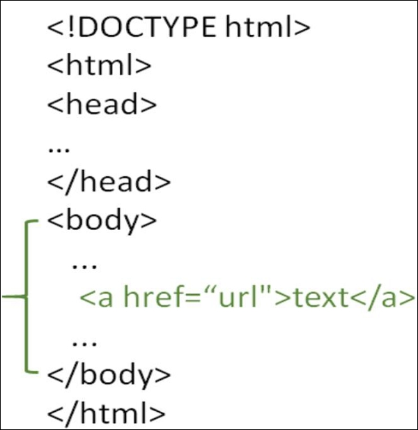

Syllabus
Introduction To Web: Client/Server concepts, Components of Web Application, Types of Web Content, Overview of HTTP - HTTP request – response, Generation of dynamic web pages, Application Servers, Web Security.Markup Language (HTML): Formatting and Fonts, Commenting Code, Anchors, Backgrounds, Images, Hyperlinks, Lists, Tables, Frames, HTML Forms.
Cascading Style Sheet (CSS): The need for CSS, Basic syntax and structure, Inline Styles, Embedding Style Sheets, Linking External Style Sheets, Backgrounds, Manipulating text, Margins and Padding,Positioning using CSS.
Client Side Scripting using JavaScript: Core features, Data types and Variables, Operators -Expressions and Statements, Functions, Objects, Array, String - Date and Math related Objects,Document Object Model, Event Handling, Form handling and validations.
An overview of Relational Database Design: Tables, Attributes, Tuples, Primary keys, Foreign keys, Indexes, DDL Commands – CREATE, ALTER, DROP and TRUNCATE; DML Commands – SELECT, INSERT, UPDATE and DELETE.
Server Side Scripting using PHP: Setting up the environment (Example - XAMP server), PHP Programming basics - Print/echo, Variables and constants, Strings and Arrays, Operators, Control structures and looping structures, Functions, Reading Data in Web Pages, Embedding PHP within HTML, Establishing connectivity with database, Debugging with phpdbg. Web Application development in any PHP framework (Laravel, CodeIgniter, Symfony, CakePHP etc.): Naming convention, MVC model, Connectivity with Database, Database interaction. Debugging web apps: Browser debugging tools (Any browser web developer tools) - View and change the DOM and CSS, Console, Debug JavaScript, View and debug network activity, Performance tools etc.
HTTP requests
An HTTP request is made by a client, to a named host, which is located on a server. The aim of the request is to access a resource on the server.
To make the request, the client uses components of a URL (Uniform Resource Locator), which includes the information needed to access the resource. The components of a URL explains URLs.
A correctly composed HTTP request contains the following elements:
A request line.
A series of HTTP headers, or header fields.
A message body, if needed.
Each HTTP header is followed by a carriage return line feed (CRLF). After the last of the HTTP headers, an additional CRLF is used (to give an empty line), and then any message body begins.
Request line
The request line is the first line in the request message. It consists of at least three items:
A method. The method is a one-word command that tells the server what it should do with the resource. For example, the server could be asked to send the resource to the client.
The path component of the URL for the request. The path identifies the resource on the server.
The HTTP version number, showing the HTTP specification to which the client has tried to make the message comply.
An example of a request line is:
GET /software/htp/cics/index.html HTTP/1.1
In this example:
the method is GET
the path is /software/htp/cics/index.html
the HTTP version is HTTP/1.1
A request line might contain some additional items:
A query string. This provides a string of information that the resource can use for some purpose. It follows the path, and is preceded by a question mark.
The scheme and host components of the URL, in addition to the path. When the resource location is specified in this way, it is known as the absolute URI form. For HTTP/1.1, this form is used when a request will go through a proxy server. Also for HTTP/1.1, if the host component of the URL is not included in the request line, it must be included in the message in a Host header.
HTTP headers
HTTP headers are written on a message to provide the recipient with information about the message, the sender, and the way in which the sender wants to communicate with the recipient. Each HTTP header is made up of a name and a value. The HTTP protocol specifications define the standard set of HTTP headers, and describe how to use them correctly. HTTP messages can also include extension headers, which are not part of the HTTP/1.1 or HTTP/1.0 specifications.
The HTTP headers for a client's request contain information that a server can use to decide how to respond to the request. For example, the following series of headers can be used to specify that the user only wants to read the requested document in French or German, and that the document should only be sent if it has changed since the date and time when the client last obtained it:
Accept-Language: fr, de
If-Modified-Since: Fri, 10 Dec 2004 11:22:13 GMT
An empty line (that is, a CRLF alone) is placed in the request message after the series of HTTP headers, to divide the headers from the message body.
Message body
The body content of any HTTP message can be referred to as a message body or entity body. Technically, the entity body is the actual content of the message. The message body contains the entity body, which can be in its original state, or can be encoded in some way for transport, such as by being broken into chunks (chunked transfer-coding). The message body of a request may be referred to for convenience as a request body.
Message bodies are appropriate for some request methods and inappropriate for others. For example, a request with the POST method, which sends input data to the server, has a message body containing the data. A request with the GET method, which asks the server to send a resource, does not have a message body.
Data Definition Language (DDL) commands:
CREATE to create a new table or database.
ALTER for alteration.
Truncate to delete data from the table.
DROP to drop a table.
RENAME to rename a table.
Cascading Style Sheets (CSS) is a style sheet language used for describing the presentation of a document written in a markup language such as HTML.[1] CSS is a cornerstone technology of the World Wide Web, alongside HTML and JavaScript.[2]
CSS is designed to enable the separation of presentation and content, including layout, colors, and fonts.[3] This separation can improve content accessibility, provide more flexibility and control in the specification of presentation characteristics, enable multiple web pages to share formatting by specifying the relevant CSS in a separate .css file which reduces complexity and repetition in the structural content as well as enabling the .css file to be cached to improve the page load speed between the pages that share the file and its formatting.
Separation of formatting and content also makes it feasible to present the same markup page in different styles for different rendering methods, such as on-screen, in print, by voice (via speech-based browser or screen reader), and on Braille-based tactile devices. CSS also has rules for alternate formatting if the content is accessed on a mobile device.[4]
The name cascading comes from the specified priority scheme to determine which style rule applies if more than one rule matches a particular element. This cascading priority scheme is predictable.
The CSS specifications are maintained by the World Wide Web Consortium (W3C). Internet media type (MIME type) text/css is registered for use with CSS by RFC 2318 (March 1998). The W3C operates a free CSS validation service for CSS documents.[5]
In addition to HTML, other markup languages support the use of CSS including XHTML, plain XML, SVG, and XUL.
 What is PHP?
What is PHP?
PHP is an open-source, interpreted, and object-oriented scripting language that can be executed at the server-side. PHP is well suited for web development. Therefore, it is used to develop web applications (an application that executes on the server and generates the dynamic page.).
PHP was created by Rasmus Lerdorf in 1994 but appeared in the market in 1995. PHP 7.4.0 is the latest version of PHP, which was released on 28 November. Some important points need to be noticed about PHP are as followed:
PHP stands for Hypertext Preprocessor.
PHP is an interpreted language, i.e., there is no need for compilation.
PHP is faster than other scripting languages, for example, ASP and JSP.
PHP is a server-side scripting language, which is used to manage the dynamic content of the website.
PHP can be embedded into HTML.
PHP is an object-oriented language.
PHP is an open-source scripting language.
PHP is simple and easy to learn language.
HTML
With HTML, easily add hyperlinks to any HTML page. Link team page, about page, or even a test by creating it a hyperlink. You can also create a hyperlink for an external website. To make a hyperlink in an HTML page, use the <pre><a>and </a> tags, which are the tags used to define the links.
The
<a> tag indicates where the hyperlink starts and the </a> tag indicates where it ends. Whatever text gets added inside these tags, will work as a hyperlink. Add the URL for the link in the <a href=” ”>
. Just keep in mind that you should use the <a>… <body>…</body>
tags.
